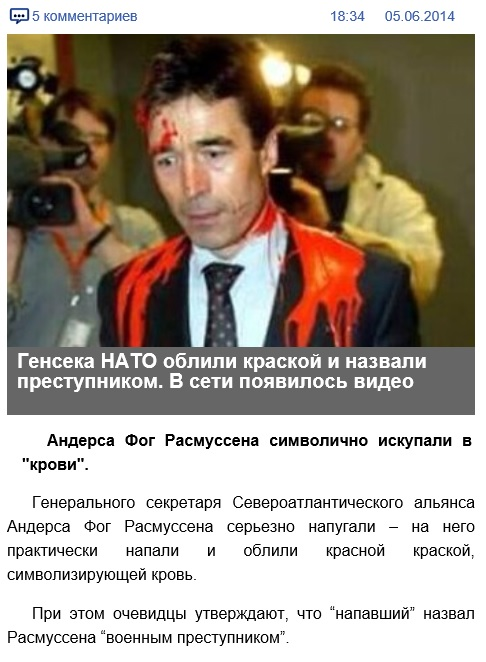
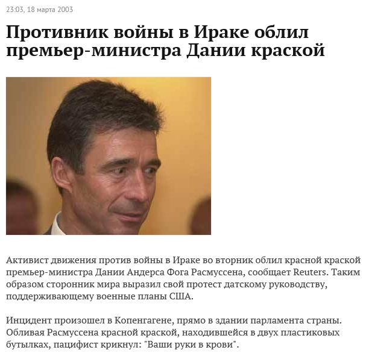

Видео 2003 года с Андерсом Фог Расмуссеном представляется как актуальные события
5 июня 2014 года в сети Youtube появился видеоролик с заголовком «Генсека НАТО облили краской».На видео неизвестный человек обливает краской генерального секретаря НАТО Андерса Фог Расмуссена:
https://www.youtube.com/watch?v=rXkGBzo0yZQ
Об этом ролике написали несколько веб-сайтов.Причем это событие представили как произошедшее именно 5 июня 2014 года.Также эта информация получила широкое распространение в социальных сетях.
Однако это видео было снято еще 18 марта 2003 года.Тогда Расмуссен занимал должность премьер-министра Дании.Красной краской его облил активист движения против войны в Ираке.Таким образом активист выразил протест датскому руководству, поддерживающему военные планы США.Случай произошел в Копенгагене, прямо в здании парламента страны.Обливая Расмуссена, пацифист крикнул: «Ваши руки в крови».

Это же видео использовали для создания фейковой новости еще 27 августа 2011 года.Тогда оно в очередной раз появилось на сервисе Youtube под заголовком «Расмуссен ответил за геноцид в Ливии».На тот момент Андерс Фог Расмуссен уже был на должности генерального секретаря НАТО, а эта организация вела активную военную операцию в Ливии.
https://www.youtube.com/watch?v=N6t1_p3uwx8
Posted On: 2014-06-06T21:00:00

Content Date: 2014-06-06
Download Date: 2021-07-16
Document ID: L0C04FCZ0